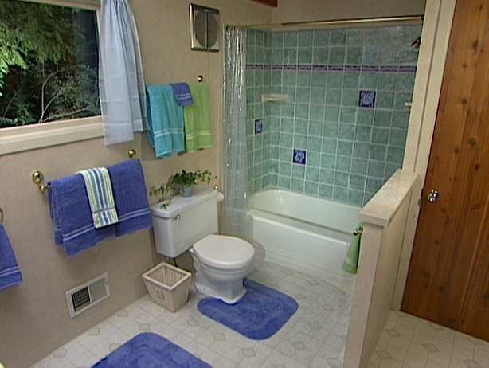

Like most people in the United States, your home will more than likely have more than one bathroom and at least one bathtub can be found within your home. Bathtubs tend to get used often, especially families with multiple children. Bath time happens every night and kids love splashing around in the bubbles with their toys. The bathroom floor oftentimes has some water on the floor by the end of bath time. Bathtubs have been created to withstand years of use but they do need to be looked after, cleaned and maintained correctly. The time will come when you decide that your old tub has seen better days. Tubs can easily become discolored and lose their original color, gleam and shine, while chips and cracks also start to appear. In other cases, the bathroom may need updated and the tub is simply outdated and the wrong color. Whatever the reason, you need to understand that you have a few options to choose from that you can save money. The options are real simple and are listed below,
There is no right or wrong choice. Both options are credible and bring great results. The decision is yours and you need to decide what is best for you, your household and your finances before taking your chosen course of action. Having your tub refinished professionally will save you from dipping into hard-earned savings. It would also save you much of your time and the bathroom may only have a downtime of 36. To help you in deciding and making the right choice, it’s important that you take certain factors into consideration. Let’s look at the factors involved that will help you make the right decision.
Number one priority is usually the cost factor!
The average cost of replacing an old tub has been estimated at $3,500 according to the NKBA, National Kitchen and Bath Association. This amount of money is equivalent to a family vacation or a decent second-hand car. Now, let’s take a look at the costs of refinishing your tub in comparison to replacing it. If you were to contact a professional refinishing company, you would be looking at paying around anywhere from $300-$500 for a decent job and depending on the work requirements needing carried out. It is good to note that the cost of replacing a tub tends to be fairly minimal. You do need to take into account the other added costs that can come with choosing to replace a tub. These other costs are likely to include the removal of the old tub, demolition, plumbers, carpenters and the cost of transporting the old tub to the nearest landfill all need to be realistically looked at. Let’s not forget the inconvenience of the bathroom being out of commission for up to 2-3 weeks and in some cases even longer. Floors will need to be ripped up, sometimes walls pulled down and even bathroom doors taken off to get that new tub in the right place. There is a real cost involved, not just monetary factors but also physical, mental and emotional, how long could you, your family and your children cope if you only had one bathroom and it was out of commission for up to three weeks?
We can agree that there is much to consider before making the right decision regarding your old tub. At this point, common sense would have you sway towards having your old tub refinished rather than the big job of having it replaced. Refinishing your tub is a much better choice in regards to saving your own money and saving you the hassle of opening the doors of your home to the various contracted workers needed and the beauty of having your very own mini-building site right inside your home and in the room that’s probably used the most in the house. There is real thought needed and especially if you decide to go against hiring any help and replace your old tub on your own. You might as well wave goodbye to all those lazy weekends and use all your vacation time from your place of work.

Refinish or Replace?
Now it is simple to understand that replacing an old tub with a brand new one would leave you with a pristine looking, smooth feeling and durable bath. A bathtub that would be brand new and last several years, seems like the best way forward, doesn’t it? What if there was a service available that could have your old bathtub refinished and looking just as good as it did when it was first purchased? What if there was a service available that gave you the option of having your bathtub recolored to suit the décor of the rest of the room? Well, there is a service available and it’s called professional tub refinishing.
The cost of buying a new tub can range from anything between $700 and in excess of $10,000 depending on the type of new bathtub you are looking at and the materials in which it is made. The cost of buying a new tub is expensive and as we have already covered there are many extra fees that will be included for fitting, etc. If you choose to have your tub refinished, then you are looking at paying a fraction of the cost in comparison to replacing. The great thing about professional refinishing services is that the results are just as good as having a new bathtub fitted. Professional tub refinishing services will add around 10-15 years to its life span. Unlike having your tub replaced, having it refinished would mean that you are only dealing with one specialist and the refinishing work would take only a few hours of one day with your bathroom having a downtime of no more than 36 hours.
The process of refinishing your tub is thorough and will involve a special cleaning process. Initially, your old tub will be scrubbed down with special chemical cleaners. It is important that all traces of dirt, soap, etc are cleaned and removed completely from the bathtub’s surface. The reason that the cleaning process is very thorough is simply to make sure that the surface that is to be refinished and re-glazed is completely cleaned to allow the best possible bonding between solution applications. After the tub has been scrubbed clean, the cracks and chips are then filled in and then sanded and smoothed down to an even level consistent with the rest of the bathtub’s surface. It is after the tub has been smoothed down that an initial layer of primer is appied. This application of primer gives the needed time to dry before the top coat is applied. It is when the top coat is applied that you can request a color change to be applied to the paint, a color that suits the style of your bathroom.
There are decisions that need to be made to help you choose between the options of refinishing or re-glazing your old bathtub. What you need to do is sit down and really think of the costs involved and what the best option is for you. The information in this article clearly points out a case for both options. The decision is yours.
If you do decide to go for a professional refinishing service, as an alternative to having your tub replaced, then make sure that you search for the best company who can provide you with the best services and results. When selecting a company, never be afraid to ask questions. Be sure that you know and understand what you are paying for and what results you will be receiving once the services have been completed.
When it comes to choosing between refinishing or replacing, it seems to be a no-brainer. There are more positive factors that would have you sway with opting to choose refinishing. Why not use that extra cash you would save by refinishing on a relaxing vacation, enjoying your days off work rather than breaking the bank and using all your vacation time that you have trying to contact contractors and sorting out when and how your new tub will be fitted. Choose to refinish rather than replace. For more information, contact us today.
{kind=link}